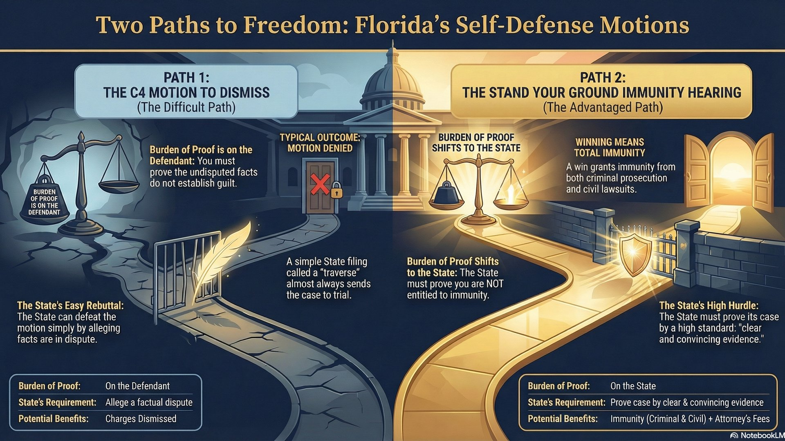
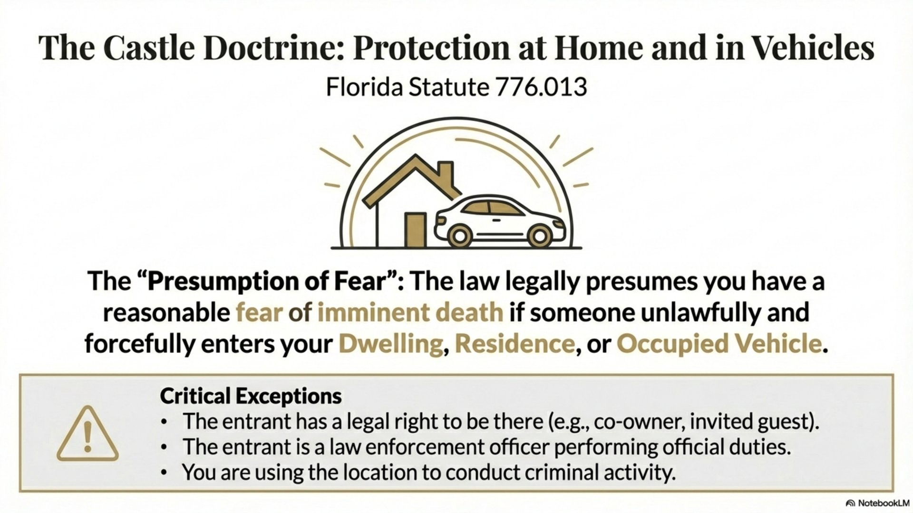
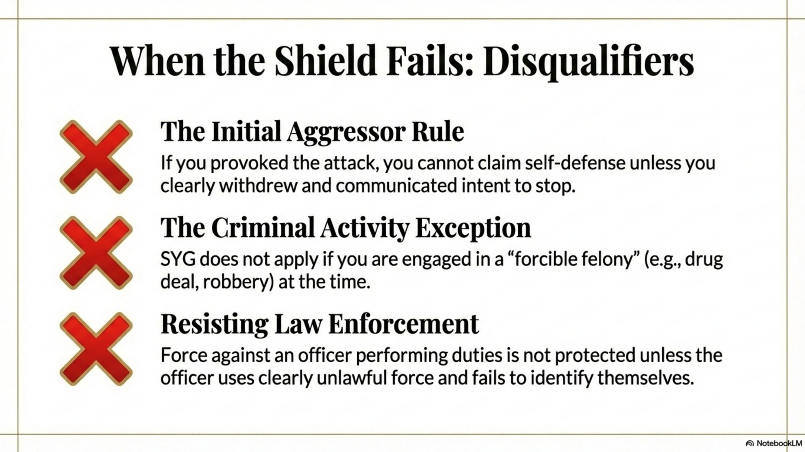
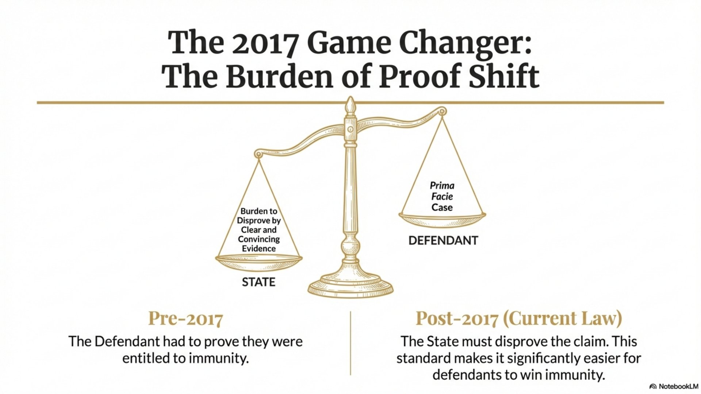

Stand Your Ground vs. C4 Motion to Dismiss: Why the SYG Immunity Hearing Is a Defendant's Best Weapon

If you're charged with a violent crime in Florida and you claim self-defense, you have two paths to dismissal before trial: a traditional Rule 3.190(c)(4) Motion to Dismiss or a Stand Your Ground immunity hearing. They sound similar. They're not. One puts the burden on you. The other puts the burden on the State. Understanding the difference could mean the difference between going to trial and walking free.
The History of Stand Your Ground: From Castle Doctrine to No Duty to Retreat
To understand why Florida's Stand Your Ground law is so powerful, you need to understand what came before it.
The Common Law Rule: Duty to Retreat
For centuries, English common law imposed a duty to retreat before using deadly force. If you could safely escape a threat, you were legally required to do so. Only if retreat was impossible could you use force to defend yourself. This rule made sense in its historical context—society wanted to discourage violence, even in self-defense situations.
The exception was the Castle Doctrine: you had no duty to retreat in your own home. Your home was your "castle," and an intruder forfeited their right to safety by invading your sanctuary.
Florida's 2005 Revolution
In 2005, Florida became the first state to expand the Castle Doctrine beyond the home. The legislature passed what became known as the "Stand Your Ground" law, codified in F.S. 776.012 and F.S. 776.013.
The key change: a person has no duty to retreat anywhere they have a legal right to be. Not just at home—on the street, in a parking lot, at work, anywhere.
The Core Principle
Under Florida law, a person who is not engaged in unlawful activity and who is attacked in any place where they have a right to be has no duty to retreat and has the right to stand their ground and meet force with force, including deadly force if they reasonably believe it is necessary to prevent death or great bodily harm or to prevent the commission of a forcible felony.
Stand Your Ground States vs. Duty to Retreat States
Today, the United States is divided into two categories when it comes to self-defense law:
Stand Your Ground States (~30 states)
- No duty to retreat before using force
- Applies anywhere you have a legal right to be
- Many offer pre-trial immunity hearings
- Examples: Florida, Texas, Georgia, Ohio, Arizona
Duty to Retreat States (~10 states)
- Must retreat if safely possible before using deadly force
- Castle Doctrine still applies in the home
- No special immunity hearing for self-defense
- Examples: New York, New Jersey, Massachusetts, Hawaii

The remaining states fall somewhere in between, with various combinations of castle doctrine protections and limited stand-your-ground provisions. But Florida's law is among the most defendant-friendly in the nation—and not just because of the "no duty to retreat" rule. The real power lies in the immunity hearing.
The Traditional Motion to Dismiss: Rule 3.190(c)(4)
Before Stand Your Ground, defendants claiming self-defense had one option to avoid trial: a Rule 3.190(c)(4) Motion to Dismiss. This motion is still available for any criminal case and argues that the undisputed facts fail to establish a prima facie case of guilt.
Here's the catch: the defendant bears the burden.
How a C4 Motion Works
- Defendant files sworn motion alleging there are no material disputed facts
- State files traverse if it disagrees—alleging facts are disputed
- If traverse filed: motion is denied automatically (facts are now "disputed")
- Burden on defendant to show undisputed facts don't establish guilt
- Standard: All facts viewed in light most favorable to the State
The problem for self-defense claims is obvious: the State can almost always allege some disputed fact. Did the defendant act reasonably? That's disputed. Was the threat imminent? Disputed. Was the force proportional? Disputed. Once the State files a traverse, the motion is dead.
The C4 Problem
Under Rule 3.190(c)(4), the State can defeat your motion simply by alleging that facts are disputed. They don't have to prove anything. The moment they file a traverse saying "we dispute that this was self-defense," your motion is effectively denied and you're going to trial.
The Stand Your Ground Immunity Hearing: The Game Changer
Florida's Stand Your Ground law created something entirely different: a pre-trial evidentiary hearing where the court actually determines whether you're entitled to immunity from prosecution—not just whether facts are disputed.
Under F.S. 776.032, a person who uses force in lawful self-defense is immune from criminal prosecution—not just entitled to assert self-defense at trial, but completely immune from prosecution for that conduct.
The 2017 Amendment: Burden Shift
In 2017, the Florida Legislature made the Stand Your Ground immunity hearing even more powerful. They amended F.S. 776.032 to shift the burden of proof from the defendant to the State.
How the SYG Immunity Hearing Works (Post-2017)
- Defendant files motion for Stand Your Ground immunity
- Defendant makes prima facie showing of self-defense
- Burden shifts to the State to prove by clear and convincing evidence that defendant is NOT entitled to immunity
- Evidentiary hearing where both sides present witnesses and evidence
- Judge decides based on the evidence presented—not just allegations
- If State fails to meet burden: case is dismissed with prejudice

This is a fundamental shift. The State can't just allege that your self-defense claim is disputed—they have to prove that you weren't acting in self-defense. And they have to prove it by clear and convincing evidence, which is a higher standard than the typical preponderance used in civil cases.
Side-by-Side Comparison: SYG vs. C4
| Factor | Rule 3.190(c)(4) Motion | Stand Your Ground Immunity |
|---|---|---|
| Burden of Proof | On the defendant | On the State (after prima facie showing) |
| Standard | No material disputed facts | Clear and convincing evidence |
| State's Response | Traverse (allegation only) | Must present evidence |
| Hearing Type | Legal argument (usually) | Full evidentiary hearing |
| What State Must Do | Allege disputed facts | Prove defendant wasn't justified |
| If Defendant Wins | Charges dismissed | Charges dismissed + immunity from civil suit |
| Attorney's Fees | Not recoverable | Recoverable if defendant prevails |
Why This Matters: A Real-World Example
Let's say you're charged with aggravated battery. You were attacked first, defended yourself, and now you're facing a felony. Here's how each motion plays out:
Under a C4 Motion
You file a motion alleging that the undisputed facts show you acted in self-defense. The State files a one-paragraph traverse saying "the State disputes that defendant acted in self-defense." Motion denied. See you at trial.
Under a Stand Your Ground Hearing
You file a motion for immunity. At the hearing, you present evidence: your testimony, witness statements, surveillance video, injuries you sustained. Now the State must respond with evidence—not allegations, but actual proof. They must call the alleged victim. They must present their case. And they must prove by clear and convincing evidence that you were not justified.
If they can't meet that burden—if the judge finds the State hasn't proven you weren't acting in self-defense—the case is dismissed. No trial. No conviction. No risk of a jury getting it wrong.
The Strategic Advantage
A Stand Your Ground immunity hearing essentially forces the State to conduct a mini-trial where they bear the burden of proof. You get to see their case. You get to cross-examine their witnesses. And you win if they can't affirmatively prove you weren't justified. It's a preview of trial where the deck is stacked in your favor.

When Each Motion Is Appropriate
Despite the power of the SYG immunity hearing, a C4 motion still has its place. Here's when each is most effective:
Use C4 Motion When:
- Facts are truly undisputed (rare)
- Legal issue, not factual (statute of limitations, jurisdiction)
- State's evidence has a fatal legal flaw
- No self-defense claim involved
Use SYG Immunity When:
- Any claim of self-defense or defense of others
- Facts are contested but evidence favors defendant
- Strong witnesses, video, or physical evidence
- Alleged victim has credibility problems
- You want to preview the State's case
The Immunity Premium: Additional Protections
Winning a Stand Your Ground immunity hearing provides benefits beyond just avoiding trial:
- Civil Immunity: Under F.S. 776.032(3), you're immune from civil lawsuits arising from your use of force. The alleged victim can't sue you.
- Attorney's Fees: If you win immunity, you may be entitled to recover your reasonable attorney's fees and costs from the State.
- No Double Jeopardy Risk: Unlike an acquittal at trial, immunity means the case is over—no retrial possible.
- No Criminal Record: Dismissal based on immunity leaves no conviction record. You can truthfully say you were never convicted.
What the SYG Immunity Hearing Looks Like
An SYG immunity hearing is a full evidentiary hearing, much like a bench trial. Here's what to expect:
The Hearing Process
- Defense presents first: You make a prima facie showing of self-defense—testimony, witnesses, evidence
- State responds: Prosecution must present evidence disproving self-defense
- Witnesses are sworn: Both sides can call and cross-examine witnesses
- Judge weighs evidence: Unlike a C4 motion, the judge evaluates credibility and weighs the evidence
- Ruling: Judge determines whether State met its burden of proving defendant wasn't justified
This is critical: the judge isn't just ruling on whether facts are disputed. The judge is actually deciding whether you acted in self-defense. If the State's witnesses are not credible, if their evidence is weak, if the physical evidence supports your account—you win. Without ever facing a jury.
Why You Need an Experienced Attorney
The Stand Your Ground immunity hearing is powerful—but only if it's done right. An ineffective hearing can be worse than no hearing at all:
- You reveal your defense strategy to the State before trial
- Your testimony is locked in and can be used to impeach you later
- Witnesses are committed to their stories under oath
- A denied motion may signal to the judge that your case is weak
The decision to pursue an SYG immunity hearing—and how to present it—requires careful strategic analysis. Not every self-defense case should go to an immunity hearing. Sometimes the evidence isn't strong enough yet. Sometimes the State's case will collapse at trial. An experienced criminal defense attorney knows when to file for immunity and when to wait.
Facing Charges After Defending Yourself?
If you've been charged with assault, battery, or any violent crime after using force in self-defense, the Stand Your Ground immunity hearing may be your best path to freedom. But timing matters—and strategy matters more. You need an attorney who has handled these hearings and knows when to fight for immunity versus when to take the case to trial.
Call 407-500-7000 for a free consultation. As a former State Trooper and Deputy Sheriff, I understand how law enforcement investigates these cases—and I know how to build a winning defense.

Jeff Lotter
Criminal Defense Attorney | Former State Trooper
Jeff Lotter is an Orlando criminal defense attorney and former Florida Highway Patrol trooper. He uses his law enforcement background to build stronger defenses for clients facing criminal charges.